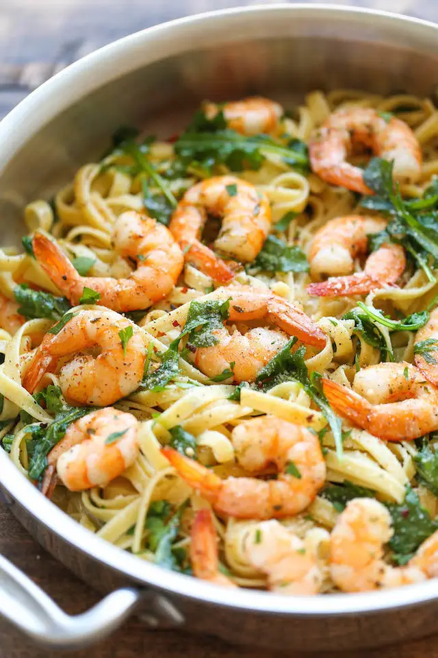

Garlic Butter Shrimp Pasta
An easy peasy dish that`s simple, flavorful and increidibly hearty. And all you
need is 20 min to whip this up!

With the cold weather
upon us, it`s all about
stayind in with your
sweatpants and cooking up
some major comfort food.
Although I should mention
it`s pushing 80 degrees F
out here in Southern
Califonia and I`m still
walking around in shorts
and flip flops.
Still, that`s not
stopping me from indulging
in the ultimate kind of
comfort food and throwing
a shrimp and pasta party
with Eat Shrimp and
Calphalon. And wiht the
help of Calphalon`s
Comteporary Nonstick
3.5qt. Pour and Strain pan
and Stainless Utensils
Silicone Tipped Tongs,
this dish will come
together in just 20
minutes from start to
finish.
All you have to do is
boil up some pasta and
saute your shrimp in a
pool of garlic-butter-herd
goodness. Once that`s
ready, just toss in your
pasta and some fresh
greens. That`s it. It`s
easy, quick, and
comforting in any kind of
weather!
INGREDIENTS:
- 8 ounces fettuccine
- 1 pound medium
shrimp, peeled and
deveined
- Kosher salt and
freshly ground black
pepper, taste
- 8 tablespoons (1
stick) unsalted
butter, divided
- 4 cloves garlic,
minced
- 1/2 teaspoon dried
oregano
- 1/2 teaspoon crushed
red pepper flakes
- 2 cups baby arugula
- 1/4 cup freshly
grated Parmesan
- 2 tablespoons
chopped fresh parsley
leaves
DIRECTIONS:
- In a large pot of
boiling salted water,
cook pasta acoording
to package
instrucions; drain
well.
- Season shrimp with
salt and pepper, to
taste; set aside.
- Melt 2 tablespoons
butter in a large
skillet over medium
high heat. Add garlic,
oregano and red
peepper flakes, and
cook, stirring
frequenly, until
fragant, about 1-2
minutes.
- Add shrimp and
cook, stirring
occasionally, until
pink, about 2-3
minutes; set aside.
- Melt remaining 6
tablespoons butter
in the skillet. Stir
in pasta, arugula and
Parmesan until arugula
begins to wilt, about
2 minutes. Stir in
shrimp.
- Serve immediately,
garnished with
parsley, if desired.